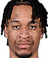
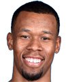
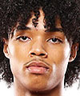

Estatura: 1,96
Peso: 98kg
Edad: 25 años
Años en la NBA: 2 años
Procedente de: Florida State

Estatura: 2,01
Peso: 95kg
Edad: 24 años
Años en la NBA: 2 años
Procedente de: Minnesota

Estatura: 2,03
Peso: 94kg
Edad: 29 años
Años en la NBA: 7 años
Procedente de: Duke

Estatura: 1,98
Peso: 85kg
Edad: 20 años
Años en la NBA: Novato
Procedente de: Kentucky
Estatura: 1,88
Peso: 75kg
Edad: 27 años
Años en la NBA: Novato
Procedente de: Morehead State